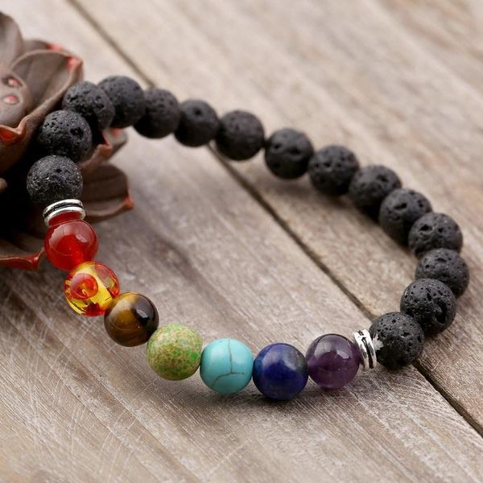

Браслеты под знак зодиака
Описание:Астрологи утверждают, что влияние камней на здоровье и судьбу человека предопределяется положением планет и созвездий зодиака. Наиболее благоприятными для человека являются те камни, которые связаны со знаком, под которым он родился.
Планетам соответствуют следующие камни:
- Солнце – алмаз, гиацинт, авантюрин, рубин, гелиодор, янтарь, все золотисто-желтые и красные камни
- Луна – опал, лунный камень, аквамарин, берилл, жемчуг, коралл, селенит, горный хрусталь, все белые, голубоватые и бесцветные камни
- Меркурий – топаз, изумруд, агат, хризолит,бирюза, аметист, фиолетово-лиловые камни
- Венера – сапфир, жемчуг, малахит, беломорит, изумруд, амазонит и все зеленые камни
- Юпитер – бирюза, сапфир, лазурит, голубой топаз и все синие камни
- Марс – рубин, кровавик, яшма, алмаз, гранат-пироп и альмадин, карнеолы, все красные и красно-коричневые камни
- Сатурн – оникс, агат, морион, черный с белым сард и все черные или очень темные камни
- Нептун – аквамарин, лунный камень, горный хрусталь, жады, камни зелено-голубых оттенков
- Уран – огненный опал, лабрадор и камни с эффектами иризации
- Плутон – раух топаз, яшма